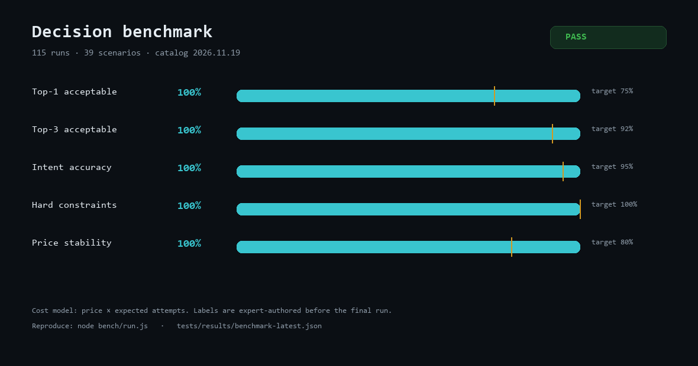

Cheap tokens, expensive work.
A model that is 10× cheaper per token but needs 1.8× the attempts and 2× the output is not 10× cheaper. ModelPick computes the denominator that matters.
Cost per solved task
Price × expected attempts, cache-aware. A 48× token gap becomes a 3% cost line — and the cheap model is 27 quality points worse.
DeepSeek V4.1 Flash $0.020
Modality is a filter
Text-in-image, rigging, 30s takes, lip sync, 1M context, open weights. The wrong model is rejected before it gets a score.
"rigged 3D model" → requiresRigging
One call inside the agent
A zero-dependency CLI, a stdio MCP server, and a portable skill. No gateway, no proxy, no key storage.
surfaces: Claude · Codex · Cursor · DSH
The launch video plan
Script → keyframes → clips → voiceover → music. Each step gets a different model, a cost estimate, and a setup block. The total is priced before you render a frame.
- Hard constraints first: duration, audio, references, resolution
- Alternatives with the quality and cost trade-off spelled out
- Retries included; provider price and read date attached
- Works offline; no key required to decide
modelpick plan "30s product launch video"
Every node in the agent workflow.
Twenty task nodes, from a 400K-token codebase to a rigged game asset, with the two or three models that actually win each one.
Text
coding · review · refactor · debug · plan · long-context · research · writing · translation · extraction · classification · data · computer-use
Image
generation · editing · text-in-image · 4K · character consistency
Video
image-to-video · 30s takes · dialogue · native audio · 4K
3D
text-to-3D · image-to-3D · PBR · rigging · quad mesh
Audio
TTS · STT · voice cloning · music · timestamps
modelpick models --modality 3d
Install. Add a key. Connect your agent.
Four steps, no hidden configuration. Keys stay on this machine; the agent only sees the tools.
Install
One global npm command. No runtime dependencies, no build step.
npm install -g modelpickAdd one API key
Open the local page, click “Get a key”, paste it, then “Save & test”. No key is ever pasted into chat.
modelpick keys --uiConnect your agent
One-time MCP registration per host. Claude Code, Cursor, and Codex can share the same local keys.
modelpick setup claude-code --global --writeRun or ask
Use the CLI directly, or let the agent choose. Text models execute now; media execution is next.
modelpick run "fix this bug" --task coding-agent
~/.modelpick/secrets.json with mode 0600. No telemetry, no proxy.Decide, then actually run it.
ModelPick recommends offline. When you add a key, the same MCP server can execute text nodes and return output, token usage, and actual cost.
1. Pick the node model
Hard constraints first, then quality, cost per solved task, latency, and key availability. No key required.
modelpick pick "refactor this module" --task coding-agent --jsonReturns recommendation.slug, costPerTask, quality, and the exact connection.
2. Compress, then execute
The main agent passes only the selected context. ModelPick checks the token budget and returns a context report; it never silently truncates.
modelpick run "fix the race" --task coding-agent --context-file diff.patch --output json --schema schema.jsonText providers today: OpenAI, Anthropic, Gemini, DeepSeek, OpenRouter. Local Ollama needs no key. Media execution is next.
run_model with system, messages, context, and optional output.schema. The key is read from this machine and is never an MCP argument.Set up your agent.
Pick an agent. Copy the command. Restart it. The config below is what gets written — no hidden step.
Claude Code
Project MCP config, skill, and a CLAUDE.md block.
pick a model for a 3D sword for UnityEvery pick has a test.
115 development runs and 35 held-out runs. Every pick, constraint, and price perturbation is in the repo.

| Metric | Dev | Held-out | Target |
|---|---|---|---|
| Top-1 acceptable | 100% | 100% | ≥75% |
| Top-3 acceptable | 100% | 100% | ≥92% |
| Hard constraints | 100% | 100% | 100% |
| Price stability | 100% | 100% | ≥80% |
| p95 latency | 1.1ms | 1.1ms | ≤300ms |
Decision benchmark, not a model-output benchmark. Quality labels are expert-authored; media scores are priors. Full methodology and known gaps in the repo.
Change the data, not the engine.
Prices move weekly. New providers appear monthly. The scoring engine, retry curve, and presets are JSON you can edit — with validation and a benchmark to catch regressions.
{
"models": [{
"slug": "my-private-model",
"pricing": { "unit": "mtok", "input": 1, "output": 2 },
"quality": { "overall": 88 }
}],
"policy": { "presets": { "cost": { "cost": 0.65 } } }
}
models.json prices · IDs · quality · sources tasks.json 20 nodes · weights · floors policy.json retry curve · presets · anchors plans.json multi-step workflows $ npm run validate $ node bench/run.js
Use it from your agent.
One command. No signup. No key needed to decide. If it saves you money, star the repo — that is the whole distribution plan.
npm install -g modelpick